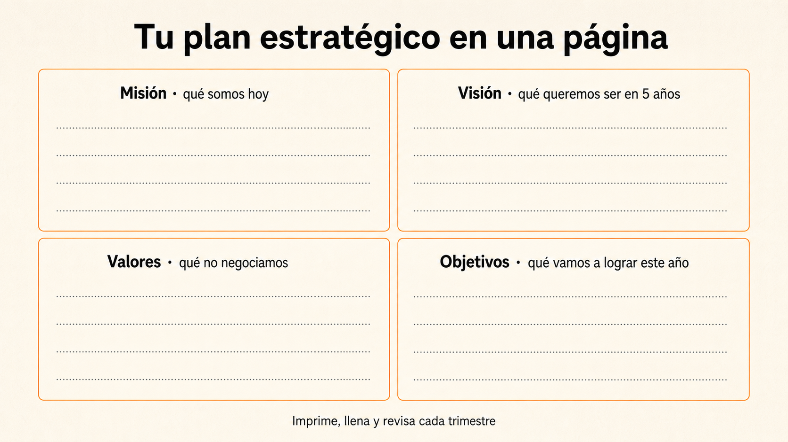
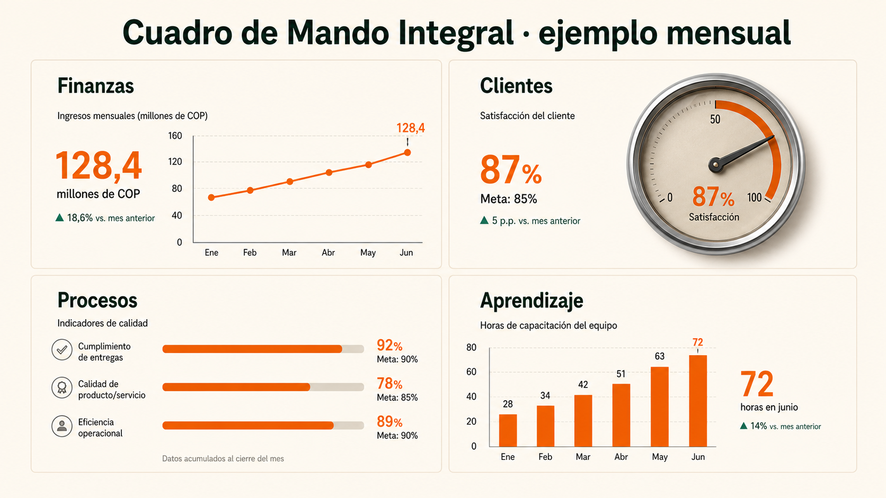

Proceso administrativo: las cuatro funciones.
Tener una buena idea de negocio no es suficiente para que funcione. Una empresa que sobrevive es la que hace cuatro cosas bien y al tiempo: planea hacia dónde va, organiza a su gente para llegar, dirige en el día a día y controla para aprender de los errores. Estas son las cuatro funciones del proceso administrativo.
Define el rumbo antes de ejecutar.
Planear no es solo escribir objetivos: es decidir hacia dónde va la empresa, qué riesgos del entorno la pueden frenar y cómo va a competir.
Documento de planeación
Una planeación seria reúne estos cuatro elementos antes de asignar un solo peso del presupuesto. Suenan parecidos pero cada uno responde una pregunta distinta.
Misión
Razón de ser actual. Define qué valor entrega la organización y para quién.
Visión
Estado futuro deseado. Orienta decisiones de largo plazo y prioridades.
Valores
Criterios de comportamiento. Señalan qué no se negocia bajo presión.
Objetivos
Resultados concretos, medibles y temporales. Traducen intención en metas.
Piensa en Juan Valdez. Su misión es cuidar al caficultor colombiano y llevar su café al mundo (hoy). Su visión es ser la marca de café más reconocida del mundo (mañana). Sus valores incluyen comercio justo y calidad de origen (cómo se comporta cuando nadie mira). Sus objetivos podrían ser abrir 50 tiendas nuevas en 2026 (concreto y medible). Cuatro elementos distintos, cada uno con su rol.
+ ¿Cuál es la diferencia exacta entre misión y visión?
La misión habla del presente: «esto somos hoy y esta es nuestra razón de existir». Si la leen mañana, sigue siendo cierta.
La visión habla del futuro: «esto queremos ser en X años». Es una promesa aspiracional que se alcanza con trabajo, no una descripción de lo que ya pasa.
Si confundes las dos te queda una empresa que dice ser lo que aún no es (misión inflada) o que solo describe lo que hace sin proyectar a dónde va (visión miope). Las dos juntas dan coherencia.

Tu plan estratégico en una sola hoja
Esta plantilla reúne en una página los cuatro elementos que definen el rumbo de una empresa: misión (qué somos hoy), visión (qué queremos ser), valores (qué no negociamos) y objetivos (qué vamos a lograr este año).
Llénala con una empresa real o con tu propio proyecto. Si no puedes responder con una sola frase cada casilla, la planeación todavía no está madura.
PESTEL: seis variables que escanean lo que hay afuera.
Antes de planear, mira el contexto. PESTEL te ayuda a anticipar riesgos externos antes de que afecten la operación.
Reformas, políticas públicas, acuerdos comerciales, riesgo país.
Inflación, tasa de interés, tipo de cambio, PIB, empleo, salario mínimo.
Tendencias de consumo, envejecimiento, urbanización, salud, género.
IA generativa, e-commerce, fintech, automatización, ciberseguridad.
Cambio climático, escasez hídrica, economía circular, huella de carbono.
Etiquetado, laboral, datos personales (Habeas Data), competencia, sanitario.
Panadería de barrio en Bogotá · oportunidades vs amenazas
Aquí lo importante no es llenar la tabla, sino detectar las 2-3 fuerzas que sí pueden cambiar el negocio.
| Variable | Oportunidad | Amenaza |
|---|---|---|
| P Política | Incentivos a emprendimiento barrial vía Cámara de Comercio. | Cambios tributarios suben costo de insumos (harina importada). |
| E Económica | Cae poder adquisitivo → cliente busca pan económico (formato familiar). | Inflación de insumos > subidas de precio que el cliente acepta. |
| S Sociocultural | Tendencia salud abre línea integral, sin azúcar, fitness. | Generación Z reduce consumo de pan blanco tradicional. |
| T Tecnológica | Domicilios y suscripción semanal vía WhatsApp Business. | Apps desplazan al cliente del mostrador físico. |
| E Ecológica | Empaques compostables como diferenciador frente a panaderías industriales. | Sequías y heladas suben precio de trigo, huevo y mantequilla. |
| L Legal | Sello frontal puede educar al consumidor y posicionar productos sin advertencias. | Etiquetado octogonal obligatorio: costo de rediseño + posible rechazo. |
¿Qué variables pesan más según la industria?
Pista: la importancia de cada variable cambia radicalmente según el sector. Una pyme de software vive del cambio tecnológico; una agroindustria vive del clima.
En alimentos manda la regulación legal (etiquetado, sanitario), seguido por lo ecológico (precio de insumos agrícolas). Lo tecnológico aún no es decisivo.
Una panadería en Colombia se entera que en 2025 va a entrar en vigor una nueva norma de etiquetado obligatorio que indica el contenido de azúcar y grasas en cada producto. ¿A qué variable PESTEL corresponde este cambio?
Un becario clasificó así estas variables. ¿Cuál clasificó mal?
Lee el análisis PESTEL y haz click sobre la frase que está mal clasificada según la teoría.
- Política: nueva reforma tributaria que sube el IVA.
- Económica: devaluación del peso colombiano.
- Sociocultural: tasa de interés del Banco de la República sube 1 punto.
- Tecnológica: apps de domicilios cambian la logística del sector.
- Ecológica: nueva norma de empaques biodegradables.
5 Fuerzas de Porter: cómo decidir por dónde competir.
Cuando ya conoces el contexto, analiza a quién tienes enfrente. Este modelo te ayuda a decidir si compites por precio, diferenciación, servicio o nicho.
Rivalidad interna
Intensidad competitiva entre empresas del mismo sector.
Poder de proveedores
Capacidad de imponer precios o condiciones de suministro.
Poder de clientes
Capacidad de exigir precios bajos, calidad o mejor servicio.
Nuevos entrantes
Amenaza de competidores que ingresan al mercado.
Sustitutos
Productos o servicios que resuelven la misma necesidad.
La estrategia consiste en elegir, de forma deliberada, un conjunto de actividades distinto para entregar una mezcla única de valor.
Caso: cafetería de especialidad en Chapinero
Estás por abrir una cafetería de especialidad en Chapinero, Bogotá. Hay decenas de cafeterías a la redonda, los clientes son exigentes y existen muchos sustitutos (té, jugos, bebidas frías).
Tu tarea Arrastra las 5 fuerzas en orden de mayor amenaza (arriba) a menor amenaza (abajo) para tu negocio.
-
Rivalidad entre competidores Decenas de cafeterías de especialidad ya operando en Chapinero. Cada una con clientela fiel.
-
Sustitutos Té, jugos naturales, bebidas frías, energizantes — resuelven el mismo "pretexto social" que el café.
-
Nuevos entrantes Abrir una cafetería tiene barreras bajas: inversión accesible, no se necesita licencia compleja.
-
Poder del cliente El cliente decide entre muchas cafeterías y compara precio/calidad. Pero no negocia descuentos como un mayorista.
-
Poder del proveedor Hay muchísimos tostadores de café especial en Colombia. Tú eliges al que mejor te sirva.
Convierte la estrategia en estructura.
Toda estrategia necesita una estructura que la soporte. Estas son las tres formas más comunes y los problemas típicos cuando la estructura no acompaña al plan.
Funcional · agrupar por especialidad
Todos los que saben de finanzas en un área, todos los de mercadeo en otra, todos los de operaciones en otra. Es el modelo más común y el más viejo. Su ventaja: la gente se especializa y mejora rápido en su tema. Su límite: las áreas pueden volverse «silos» que no se hablan entre sí.
Divisional · agrupar por producto, región o cliente
Cada división opera casi como una mini-empresa, con su propio equipo de mercadeo, finanzas y operaciones. Su ventaja: cada división conoce muy bien su mercado y reacciona rápido. Su límite: hay duplicidad de funciones entre divisiones (varios equipos de finanzas, por ejemplo).
Matricial · combinar áreas y proyectos
Una misma persona responde a dos jefes: uno funcional (su área) y uno de proyecto. Su ventaja: máxima flexibilidad para combinar especialistas en proyectos puntuales. Su límite: la doble línea de mando puede generar tensiones si no se administra muy bien.
No hay una estructura «mejor». Una empresa puede empezar siendo funcional (cuando es pequeña), pasar a divisional cuando crece a varias regiones, y moverse a matricial cuando tiene muchos proyectos cruzados. La estructura debe acompañar la estrategia, no al revés.
Cuellos de botella
Cuando una decisión o autorización depende de una sola persona o área, todo el sistema se detiene cada vez que esa persona está ocupada. Si detectas un cuello de botella, revisa cuatro cosas: autoridad (¿quién puede decidir esto?), delegación (¿podemos repartir esa decisión?), comunicación (¿la información llega a tiempo?) y flujo de información (¿hay pasos innecesarios?).
Logra que las personas quieran y puedan ejecutar.
Dirigir no es solo dar órdenes: combina la autoridad del cargo con la autoridad que se gana día a día, y entiende qué motiva a las personas que ejecutan.
Autoridad y liderazgo
Hay tres registros distintos para influir en un equipo. El más poderoso es el que combina los tres con criterio.
El cargo permite ordenar
Puede ser necesaria en crisis, pero no garantiza compromiso ni creatividad.
La confianza permite liderar
Surge de coherencia, escucha, conocimiento y capacidad de tomar decisiones justas.
El clima emocional importa
La forma en que el líder comunica afecta seguridad psicológica, aprendizaje y desempeño.
Un líder no se mide por las decisiones que toma, sino por el clima emocional que deja en el equipo cuando sale de la sala.
Motivación y comunicación
Antes de pedir resultados, asegura las condiciones humanas que los hacen posibles. Estas tres claves son la base de cualquier programa de gestión del talento.
Antes de pedir creatividad, una persona necesita seguridad, estabilidad y pertenencia.
Salario y condiciones evitan insatisfacción; logro, autonomía y reconocimiento motivan.
En contextos de cambio, el silencio genera rumores. La transparencia reduce ansiedad.
Una empresa decide subir el sueldo a todo el equipo un 15% pensando que así va a tener gente más motivada y comprometida. Seis meses después el clima sigue igual de tenso. ¿Por qué falló el plan?
Porque Herzberg ya había explicado esto: el salario es un factor higiénico, no un motivador. Si está mal, genera insatisfacción. Si está bien, simplemente la quita. Pero subirlo no genera motivación adicional. Para eso hacen falta los factores motivacionales: reconocimiento, autonomía, crecimiento y sentido del trabajo. La empresa confundió «no estar insatisfecho» con «estar motivado».
El espectro Taylor ↔ Mayo
Mueve el slider para ver cómo cambian los indicadores cuando desplazas tu estilo de dirección entre control rígido (Taylor) y autonomía total (Mayo). No hay extremo ganador — hay que encontrar tu balance.
Mueve el slider para ver el efecto.
Mide para aprender y corregir.
El control no es solo financiero ni sirve únicamente para castigar errores. Bien hecho, es el mecanismo de aprendizaje de toda la organización.
Piensa en el tablero del carro: te muestra velocidad, gasolina, temperatura y kilometraje. Solo con uno de esos datos manejarías mal. El cuadro de mando de una empresa hace lo mismo: te muestra a la vez las cuatro variables que sí importan para no estrellarte en ninguna.
Cuadro de mando: cuatro perspectivas
Una organización se evalúa desde cuatro ángulos interconectados. Mejorar en uno suele tener efecto causal en los otros.
¿El negocio es sostenible?
Rentabilidad, flujo de caja, costos, inversión y crecimiento.
¿La propuesta genera valor?
Satisfacción, recompra, tiempos de respuesta y reputación.
¿Trabajamos bien?
Calidad, errores, productividad, tiempos y desperdicio.
¿La organización mejora?
Capacitación, innovación, cultura, clima y adaptación tecnológica.
El aprendizaje es la raíz de los resultados financieros.
Una mejora en la perspectiva de aprendizaje y crecimiento —por ejemplo, resolver conflictos entre áreas— libera la perspectiva de procesos, que mejora la perspectiva de clientes y termina apareciendo en la perspectiva financiera. Las cuatro cajas no son independientes: son una cadena causal.
Mejora continua · ciclo PDCA
Un método sistemático para prototipar, evaluar con datos e institucionalizar lo que funciona.
Planear
Formula hipótesis y define indicadores.
Hacer
Prueba en pequeño antes de escalar.
Verificar
Compara resultados contra evidencias.
Actuar
Estandariza, corrige o rediseña.
Tu jefe quiere lanzar una nueva línea de productos el mes que viene. Te pide tu opinión. Aplicando el ciclo PDCA, ¿cuál sería tu recomendación más prudente?

Así se ve un tablero de control en la vida real
Un ejemplo de Balanced Scorecard implementado: las cuatro perspectivas (Finanzas, Clientes, Procesos, Aprendizaje) con sus indicadores y tendencias del mes.
No es un Excel cualquiera: cada panel mide algo que conecta con los demás. Cuando aprendizaje mejora, procesos mejora; cuando procesos mejora, clientes mejora; y al final, finanzas mejora. Es la cadena causal del bloque puesta en práctica.